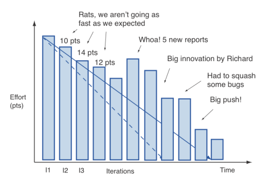
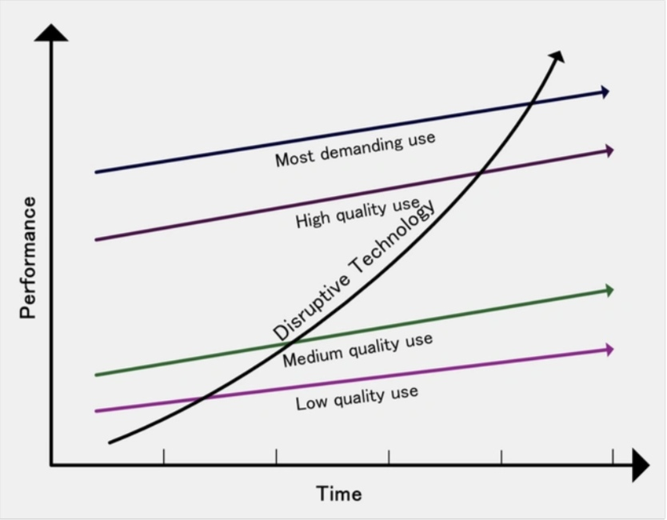
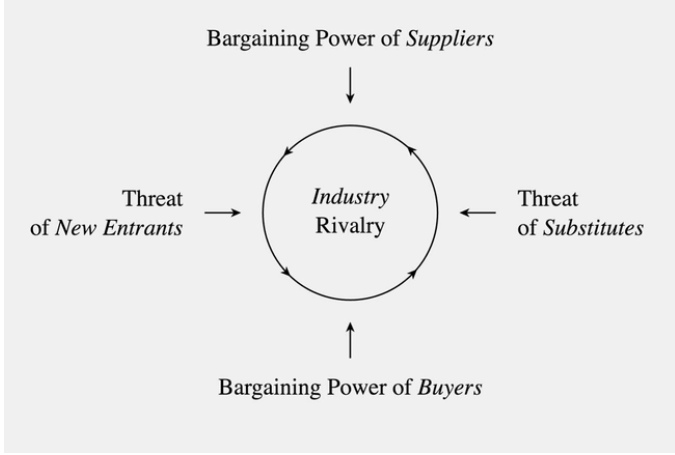

Чернявка Никита Андреевич,
Логинова Софья Андреевна,
Шульман Эмиль Маратович
Авторы: студенты 3 курса ИВТ
Чернявка Никита Андреевич,
Логинова Софья Андреевна,
Шульман Эмиль Маратович
Ежедневное сверхкороткое собрание, которое для простоты проводится в одно и то же время (обычно утром) и в одном и том же месте. Многие команды стараются уложиться в 15 минут, но это не более чем ориентир. Такое собрание еще называется «ежедневным стендапом», что подчеркивает его краткость. Ежедневное scrum-совещание проводится, чтобы каждый участник команды был в курсе происходящего, не отклонялся от пути к цели и получал план работы на ближайшие 24 часа.
Рабочий период (цикл) от одной недели до одного месяца за который команда разработки создает продукт, часть продукта, улучшает существующий функционал продукта и т.д.
Импровизированная доска с задачами на текущий спринт с карточками. Всего в ней три колонки: «Сделать», «В работе» и «Готово». С каждым новым спринтом все карточки убираются и процесс повторяется.
Главный список работ, которые необходимо выполнить. Его ведёт владелец продукта или менеджер продукта. Это постоянно меняющийся перечень функций, требований, улучшений и исправлений, из которого составляются задачи для бэклога спринта. В общем и целом, это список задач команды.
Диаграмма, показывающая соотношение прогресса оставшихся усилий к времени. Диаграмма не является обязательной к выполнению в рамках scrum, но делает прогресс более прозрачным.
Собрание после завершения спринта. Цель — запланировать повышение качества и эффективности. Скрам-команда инспектирует то, как прошел последний Спринт в отношении людей, взаимодействий, процессов, инструментов и Критериев Готовности. Выявляются предположения, которые сбили команду с пути, и исследуются их причины. Скрам-команда определяет улучшения в процессе своей работы, наиболее полезные для повышения эффективности.
Модель гарвардского профессора Клейтона Кристенсена объясняет, почему компании-лидеры терпят крах с приходом новых технологий.
Этот подход предлагает решать бизнес-задачи, ориентируясь в первую очередь на интересы пользователя. Задача команды — определить проблему, понять, какая «боль» у потенциальных клиентов и как ее облегчить. Дальше участники генерируют идеи, много идей, и — самое важное — на основе лучшей идеи создается прототип. При этом ценятся не только практические, но и эмоционально наполненные задумки, всячески поощряется командная работа и творческий подход, а логике авторы концепции предпочитают интуицию.
Отвечает за итоговый продукт, знает, в чем его востребованность для целевой аудитории, клиента.
15-минутные встречи, которые позволяют не сбиваться с пути.
Ключевой критерий работы заключается в том, что команда действует по принципу самоорганизации.
Описание требований к продукту с точки зрения запроса пользователей.
Популярный инструмент бизнес-стратегии разработал американский экономист Майкл Портер. Он помогает понять, стоит ли вообще тратить силы на захват нового рынка и как сохранить позиции на уже существующем. Для этого Портер предлагает проанализировать пять факторов: угрозу появления новых игроков и продуктов-заменителей, уровень конкуренции, а также понять степень влияния поставщиков и потребителей на выбранный сегмент рынка.
Краткое пояснение того, как завершенная задача будет продемонстрирована в конце спринта. Данное поле может представлять собой код автоматизированного теста для приемо-сдаточного испытания.